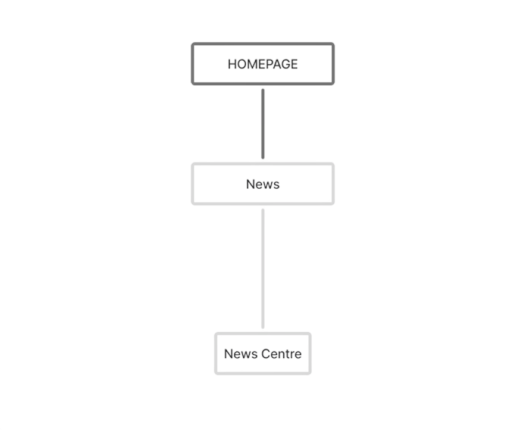
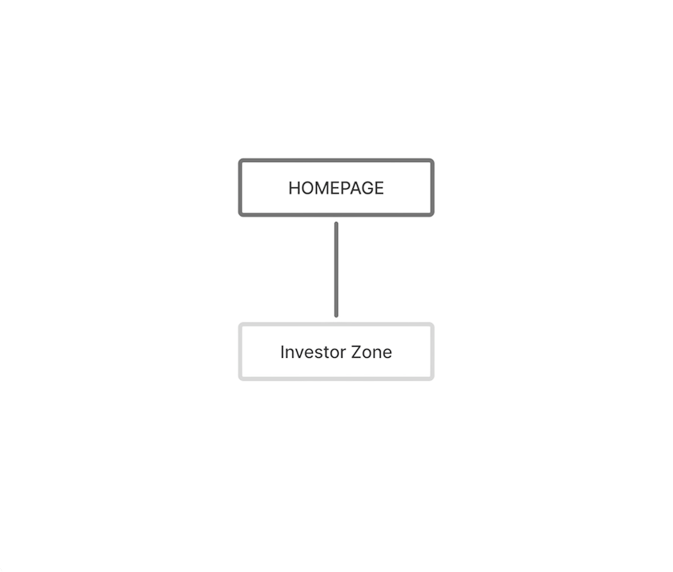
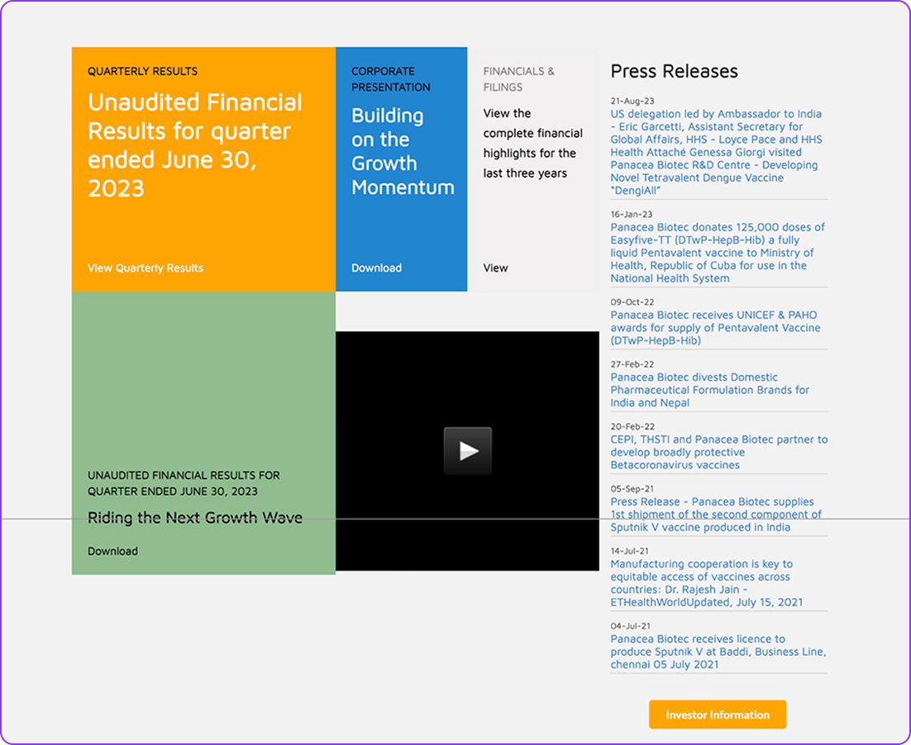
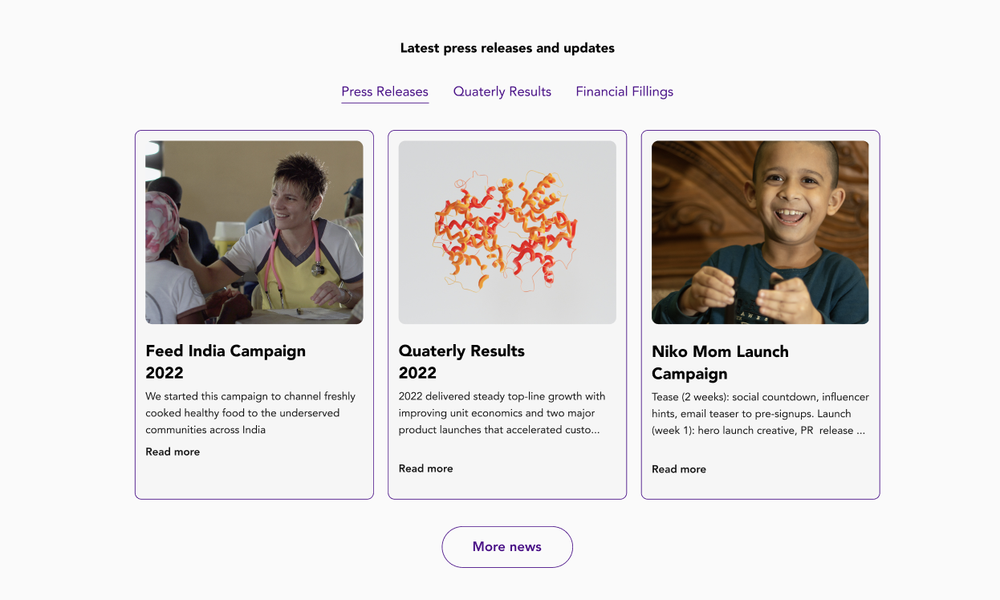

Improved discoverability through a structural redesign
Context
Panacea Biotec was expanding into Global Markets and wanted a rebrand.
In response to their strategic expansion into international markets, I was tasked to redesign their landing page to reflect a modernized identity built for global partners and investors.
Problem
The existing interface used outdated technology, lacked mobile responsiveness and did not match the rebrand of their visual identity.
Old Panacea Biotec homepage
Impact
Summary of what I achieved.

Improved Discoverability
Reduced the path to key pages like investor information from 4 clicks down to just 1.

Increased usability by 75%
Redesigned the platform by introducing visual hierarchy and a design system.

Reduced cognitive load
Reorganized the IA and grouped similar elements for a more logical flow.
Research
With no documentation or PRD to guide me I built my understanding by asking a lot of questions.
01
Who was I designing for?
I talked to my stakeholders to understand who most frequently used this platform. I was designing for 3 different users with 3 different goals. Panacea Biotec's traffic was driven by investors, procurement officers, healthcare professionals and job seekers.
Healthcare professionals
They need fast access to clinical trial updates, new product releases and drug safety profiles
Investors & Global Partners
They want to track corporate governance, clinical milestones, and performance metrics.
Job seekers
They want to learn about company culture, career opportunities, R&D and manufacturing divisions and their recent updates.
02
What was the current experience like?
Since they did not have access to any user analytics I was not able to look at heatmaps/scroll depth. I conducted a heuristic evaluation of their platform to understand the experience for current users.
Recognition Rather Than Recall
Hamburger menu - there is no information/pages visible upfront.
Consistency and standards
"Read More" button is orange. The "News & Updates" button is teal.
Match btw System & Real World
"Investor Zone", "Our company", "Our focus" in navbar are company jargon.
03
Who were the competitors?
I analysed the top 3 B2B pharmaceutical companies, mapping how they surfaced information, click depth to key pages, and how navigation guided users to relevant content.

Biocon

Zydus

Dr. Reddy's
It took me 16 seconds to find product updates and news in most sites whereas in Panacea it took over 42s.
This revealed a clear structural gap. I proposed a streamlined, "flat" navigation structure. I wanted to eliminate the ambiguity of the original menu labels and reduce the path to information for global users.
Updated information architecture

What changed?
Before
Buried hierarchy
2 navigating systems
3+ clicks to reach key info
After
Clear hierarchy
Flat navigation
1 click to reach key info
The original nav bar had over 15 options. Based on my understanding of the most important information, I condensed the nav bar into 5 options.
But that would create the same problem we are trying to solve.

There is not enough information in the nav bar, add more details


My point of confusion
Since a majority of the users look for news and recent updates of products and financials I prioritzed those sections but my stakeholders thought differently.
What I did
I redirected the conversation, asking stakeholders why those pages mattered to them. That question reframed the discussion from how much to what matters.
I replaced news with investors, a small change that aligned with both the user needs and the business needs.



Based on the key findings from my research, I developed three design principles to ensure every design decision moved the company toward a global standard of trust.
Information Needs to be Scannable
Building Trust Requires Consistency
The Website Needs to Tell a Story
Designing around constraints
Designing without an established design system
Panacea Biotec initiated a brand refresh but I had no existing design system to draw from. Given the strict two-month deadline, I prioritized the core redesign but created a few components to ensure visual consistency and a clean handoff to engineering.
Change no.1
Returning control back to the user

Before
Less than 1% of the users actually interact with auto carousels. Important product and investor information was buried.

After
Replaced hamburger menu with horizontal nav bar accelerating user discovery and auto carousel with more relevant information for to drive attention.
Change no.2
Organizing content for better discoverability.

Before
The massive lines of text and high contrast color blocks made it hard to find any information and caused strain and increased cognitive load on the users.

After
Introduced tabs to separate content by audience for better retention, Cards instead of links for easier scannability of content. Consistent buttons for cleaner visuals.
Before
Excessive scrolling required to find drugs and dosage information. No filtering options.

After
Streamlined discovery with condition-based table filters, dosage icons to make identifying medication formats easy, and a search button to help users find information in one click.
The Designer Who Asks the Most Is the Most Prepared
This was my first big UX design project, I held back from asking stakeholders too many questions because I was afraid of seeming underprepared. What this project taught me is the opposite is true. The designers who ask specific, informed questions are the ones who appear most confident because they understand the problem before touching a design tool.
Questions are the work
I approached this project with the instinct to show up with answers. What I didn't understand yet was that asking the right questions upfront is the actual design work. Designing without stakeholder clarity isn't initiative — it's assumption. And assumptions create rework. I had access to stakeholders throughout this project. I didn't use that access enough.